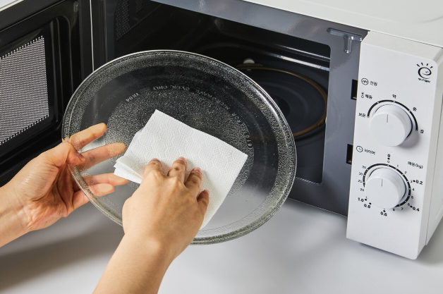

찌든때와 음식 냄새부터 회전판까지 깔끔하게 관리하는 순서

전자레인지는 음식을 데우면서 국물과 기름이 벽면이나 천장에 튀기 쉽습니다. 작은 얼룩도 반복해서 가열되면 단단하게 굳고 음식 냄새가 남을 수 있어 오염이 심해지기 전에 닦는 것이 좋습니다.
처음부터 강한 세제로 문지르기보다 회전판을 분리하고 큰 음식물을 제거한 다음 수증기로 굳은 때를 부드럽게 만들어 닦으면 훨씬 편합니다.
사용 직후에는 내부와 용기가 뜨거울 수 있으므로 충분히 식힌 뒤 청소하세요. 플러그를 뽑을 수 있다면 전원을 분리하고 바닥의 음식물과 큰 부스러기를 먼저 제거합니다.
분리 가능한 유리 회전판과 회전 받침을 조심스럽게 꺼냅니다. 뜨거운 유리판에 갑자기 찬물을 닿게 하면 손상될 수 있으므로 충분히 식힌 뒤 세척합니다.
전자레인지 사용이 가능한 용기에 물을 담아 짧게 가열하면 생긴 수증기가 벽면의 음식물과 기름때를 부드럽게 만드는 데 도움이 됩니다. 가열 후 용기와 물은 매우 뜨거울 수 있으므로 화상에 주의하세요.
전원을 분리한 뒤 부드러운 천이나 키친타월로 벽면과 바닥, 천장을 차례대로 닦습니다. 오염이 남으면 물기를 적당히 머금은 천으로 반복해 닦되 통풍구와 틈 안으로 물이 흐르지 않게 합니다.
유리 회전판은 제품 설명서에서 물세척이 가능한지 확인한 뒤 중성세제와 부드러운 수세미로 세척합니다. 완전히 건조한 다음 회전 받침과 위치를 맞춰 장착하세요.
| 부위 | 청소 방법 | 주의할 점 |
|---|---|---|
| 내부 벽면 | 수증기로 때를 불린 뒤 부드러운 천으로 닦기 | 세정제를 직접 분사하지 않기 |
| 유리 회전판 | 충분히 식힌 뒤 중성세제로 세척 | 급격한 온도 변화 주의 |
| 문 안쪽 | 젖은 천으로 음식물과 기름때 제거 | 문 틈에 물이 고이지 않게 하기 |
| 조작부 | 물기를 꼭 짠 천으로 가볍게 닦기 | 버튼 틈으로 물이 들어가지 않게 하기 |
| 외부 | 부드러운 천으로 먼지와 손자국 제거 | 통풍구를 막거나 물로 씻지 않기 |
냄새를 없애기 전에 내부에 남은 음식물과 기름때부터 제거하세요. 회전판 아래와 문 가장자리처럼 잘 보이지 않는 곳에 음식물이 남으면 청소 후에도 냄새가 이어질 수 있습니다.
청소가 끝나면 문을 잠시 열어 내부의 습기와 냄새를 빼주세요. 향이 강한 세정제로 냄새를 덮기보다 오염 원인을 제거하고 충분히 건조하는 것이 기본입니다.
전자레인지용 용기에 물을 넣어 가열해 수증기로 때를 불린 뒤 전원을 분리하고 부드러운 천으로 닦으면 편합니다.
분리 가능한 유리 회전판은 충분히 식힌 뒤 중성세제와 부드러운 수세미로 세척하고 완전히 말려 장착합니다.
남은 음식물과 기름때를 먼저 제거하고 청소 후 문을 잠시 열어 충분히 환기하는 것이 기본입니다.
강한 세정제나 연마제는 내부 표면을 손상시킬 수 있으므로 제품 설명서에서 허용하는 방법을 우선하는 것이 좋습니다.
음식물이 튀었을 때 바로 닦는 것이 좋고 사용 빈도가 높다면 내부와 회전판 상태를 주기적으로 확인하세요.
전자레인지 청소는 굳은 오염을 억지로 긁어내기보다 수증기로 먼저 부드럽게 만든 뒤 닦는 것이 편합니다. 회전판은 분리해 세척하고 내부 벽면과 문, 외부 조작부는 물기가 안쪽으로 들어가지 않도록 조심해서 관리하세요.
음식물이 튄 직후 가볍게 닦는 습관을 들이면 찌든때와 냄새가 심해지는 것을 줄일 수 있고 다음 청소도 훨씬 간단해집니다.